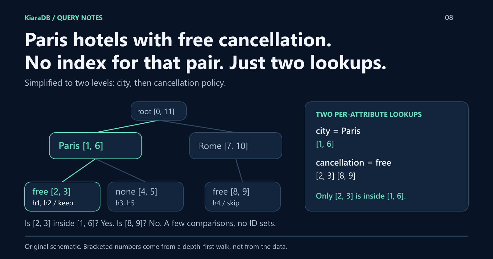
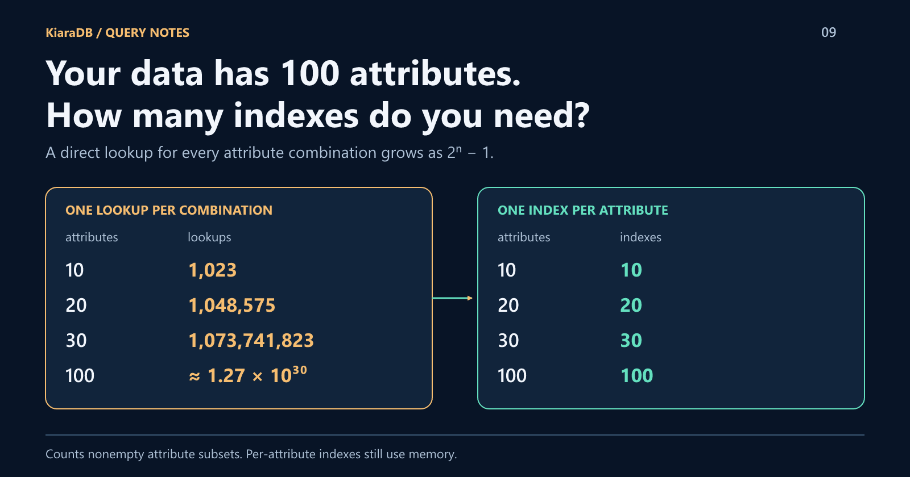
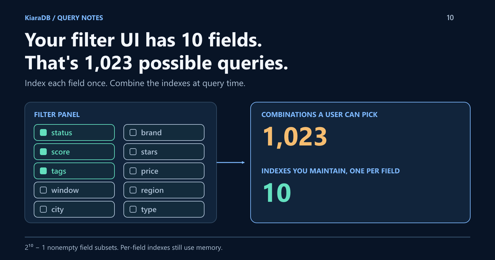
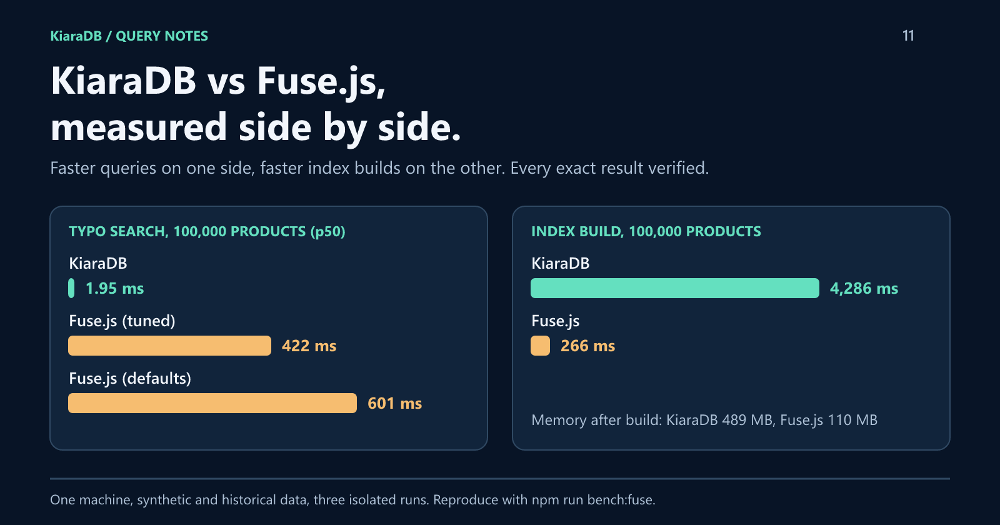
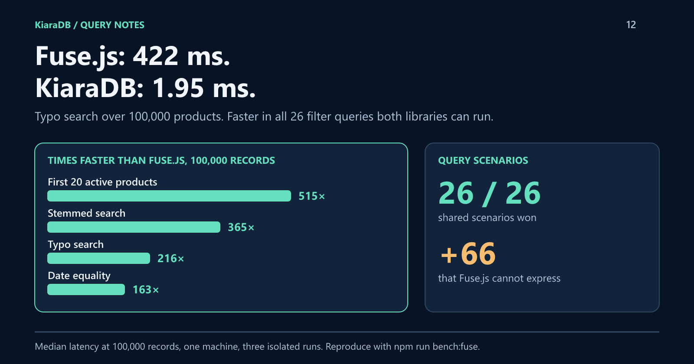
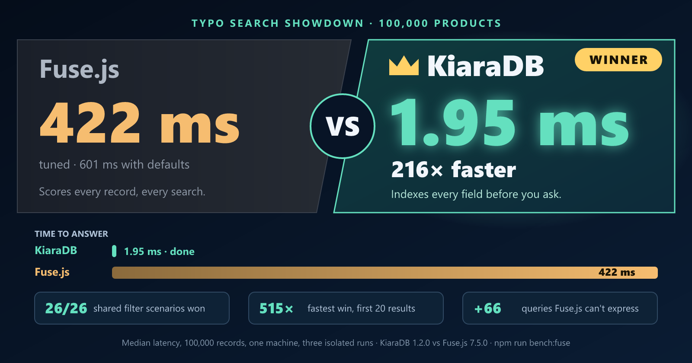

KiaraDB / campaign graphics
14 original diagrams. 1600 x 840 PNG exports and editable SVG sources.
 01 / Automatic indexing supports changing filter combinations · PNG · SVG
01 / Automatic indexing supports changing filter combinations · PNG · SVG
 02 / Tags, dates, and ranges combined with AND · PNG · SVG
02 / Tags, dates, and ranges combined with AND · PNG · SVG
 03 / Bare values resolve to field conditions · PNG · SVG
03 / Bare values resolve to field conditions · PNG · SVG
 04 / Equivalent units produce equivalent duration queries · PNG · SVG
04 / Equivalent units produce equivalent duration queries · PNG · SVG
 05 / Typo correction preserves exact filtering · PNG · SVG
05 / Typo correction preserves exact filtering · PNG · SVG
 06 / Explainable rule selection and snapshot replacement · PNG · SVG
06 / Explainable rule selection and snapshot replacement · PNG · SVG
 07 / Schema-driven indexing and advanced filters in KiaraDB · PNG · SVG
07 / Schema-driven indexing and advanced filters in KiaraDB · PNG · SVG

08 / DFS bounds combine two per-attribute lookups in a shared trie · PNG · SVG

09 / Combination lookups explode while per-attribute indexes grow linearly · PNG · SVG

10 / Ten filter fields allow 1,023 combinations but need only ten per-field indexes · PNG · SVG

11 / KiaraDB and Fuse.js benchmark: query latency and build time · PNG · SVG

12 / Introducing KiaraDB: query speed against Fuse.js · PNG · SVG

13 / Search showdown: KiaraDB beats Fuse.js · PNG · SVG
![Ticks and crosses for fourteen features. Both: exact matches across fields, typo-tolerant keyword search, and contains-any or contains-all matching on text lists. KiaraDB only: contains-any or contains-all on number lists, numeric comparisons, date and time ranges, stored ranges, missing-value filters, reported spelling corrections, a query interpreter that searches by value, and a Java edition. Fuse.js only: several typos and partial words per term, adding and removing records without a rebuild, and relevance scores with match highlighting.](../images/kiaradb-vs-fusejs-features.png) 14 / Feature comparison chart: KiaraDB and Fuse.js · PNG · SVG
14 / Feature comparison chart: KiaraDB and Fuse.js · PNG · SVG